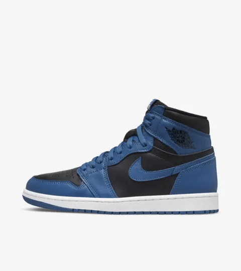
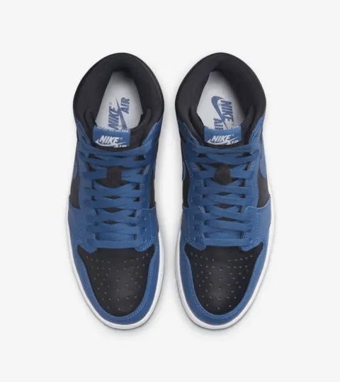
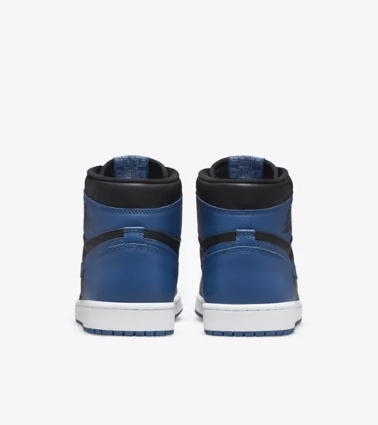
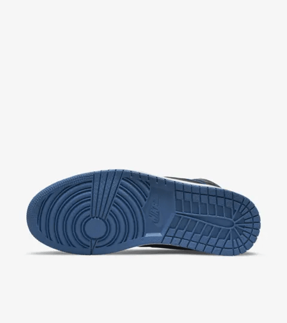

The Air Jordan 1 Dark Marina Blue is a fresh take on the classic Air Jordan 1 silhouette, known for its rich history in basketball and street fashion. Released in 2022, this colorway features a clean blend of dark marina blue, black, and white, creating a bold yet versatile look. The leather upper offers durability and comfort, while the blue overlays contrast sharply against the black base, making the sneaker stand out.
What makes the Jordan 1 Dark Marina Blue particularly appealing is its timeless design. The Air Jordan 1 has been a staple in sneaker culture since its debut in 1985, and this colorway continues that legacy by blending modern aesthetics with classic elements. Whether worn for casual outings or as part of a sneaker collection, the Dark Marina Blue captures both style and tradition, making it a must-have for fans of the iconic brand.
In addition, its simple yet striking color combination makes it easy to pair with a variety of outfits, allowing wearers to express their personal style. The Air Jordan 1 remains one of the most celebrated sneakers in the world, and the Dark Marina Blue only adds to its enduring appeal.
   